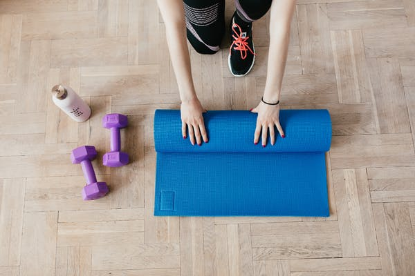

ENTRENAMIENTO COMPLETO EN CASA
 ¿Todavía sigues entrenando tu cuerpo por partes?
En este post te cuento los beneficios de tener un plan de ejercicios que implique todo tu cuerpo
y las claves para crear tu rutina de cuerpo completo.
Existe otra forma de entrenar: Rutinas de cuerpo completo:
Durante muchos años, entrenaba mi cuerpo músculo a músculo en las típicas máquinas de gimnasio.
Una y otra vez lo mismo…¡Qué aburrimiento! Me quedaba dormida contando repeticiones y, luego, esperando para continuar con la siguiente serie.
Un día para entrenar los brazos, otro para el tren inferior, otro día para tonificar glúteos, para fortalecer…¡Eso se acabó!
Existe una forma de entrenar más efectiva y, sobre todo, divertida y amena.
La clave reside en entrenar tu cuerpo como un todo, de forma global, eligiendo ejercicios que movilicen sus diferentes partes.
“El cuerpo sabe que es un todo, que la toma de conciencia de una zona, despierta la conciencia de otra.
No obstante, si no se quiere admitir lo que dice el cuerpo, uno dispone de todo su tiempo, de toda su vida, para obligarle a callar o para insensibilizarse a sus mensajes”.
Thérèse Bertherat
Te cuento el motivo por el que creo que Pilates es uno de los mejores métodos para obtener un entrenamiento completo.
Mejoras la coordinación y agilidad.
¿En tu vida diaria te mueves estilo robot “por partes”? Seguro que no.
Cuando caminas, está claro que mueves tus piernas.
Pero también tus brazos acompañan el movimiento y se crea una pequeña rotación en la columna.
Este es solo un pequeño ejemplo de cómo los movimientos que realizas a diario requieren de la coordinación de varias partes de tu cuerpo.
Por eso es más eficaz, útil y real, elegir rutinas de cuerpo completo con ejercicios que involucren todo tu cuerpo.
Ganas seguridad en tu cuerpo
Moverte utilizando todo el cuerpo hará que tus movimientos sean más libres y espontáneos. Y eso hace que te sientas más segura de tu cuerpo. Sabes que te acompaña y responde ante lo que necesitas, ya sea durante un paseo por la montaña o al reaccionar a un resbalón o tropiezo.